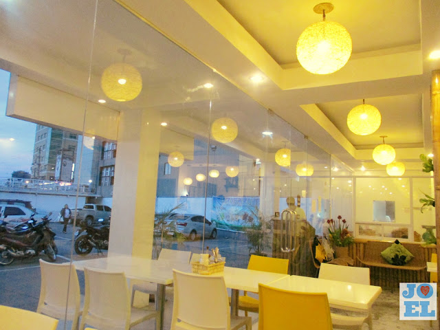
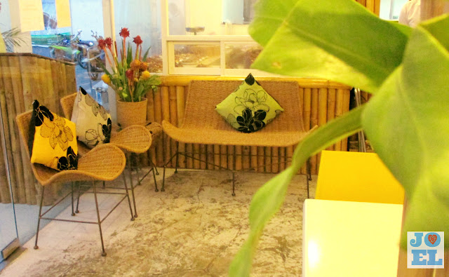
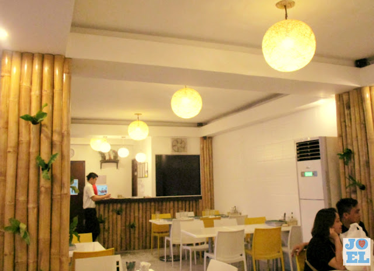
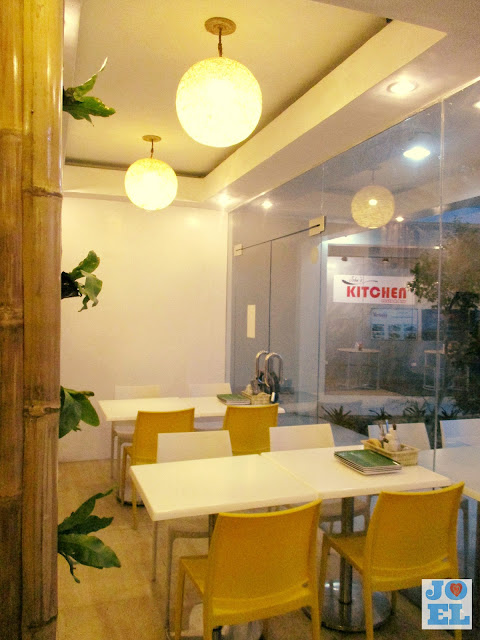
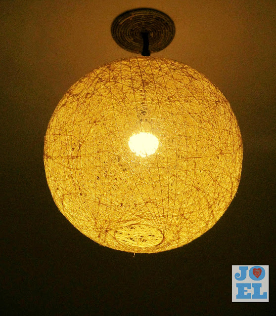
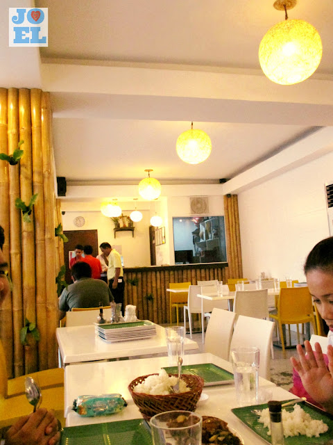

Farinas Crispy Lechon Farinas Crispy Lechon
Farinas Crispy Lechon Farinas Crispy Lechon Lechón is a pork dish in several regions of the world, most specifically Spain and its former colonial possessions throughout the world. The word lechón originated from the Spanish term lechón, referring to a suckling pig that is roasted. Lechón is a popular food in the Philippines, Cuba, Puerto Rico, the Dominican Republic, other Spanish-speaking nations in Latin America, and Spain. The dish features a whole roasted pig cooked over charcoal. Additionally, it is a national dish of the Philippines with Cebu being acknowledged by American chef Anthony Bourdain as having the best pig.
Of the many branches of Farinaslechon here in Cebu, we chose their MABOLO BRANCH. It's complete address is Unit 4 & 5, The Ridges Commercial Complex, Panagdait Road, Mabolo Cebu City. The ambiance inside the restaurant was great and comfortable. Everything's good for the eyes. At the entrance on the left side, you'll find some chairs. I don't know where it was made of but it has some pillows arranged on it. There was also a flower arrangement next to the chairs. Some green plants were seen hanging on the walls which were relaxing to the eyes. If you are stressed out from work and by just seeing something green, your eyes will be relaxed. It's what my teacher told me when I was a highschool student. The lights hanging on the ceiling was one of the highlights inside restaurant. It was simply amazing as it lighted up the whole place.
     
: Mactan Promenade, Airport road, Lapu-lapu City
: (032) 239-2830
: F. Cabahug St, Cebu City, Cebu
: (032) 344 0119
: One Paseo, Maria Luisa Road, Banilad, Mandaue City
: (032) 344-0119 | (032) 239-2830
: (032) 344-1343
: +63915-703-3964
: info@FariñasLechonn.com
: https://www.facebook.com/FariñasLechonnOfficial/
: https://www.instagram.com/FariñasLechonnOfficial/
COPYRIGHT © 2021 FARINAS LECHON | POWERED WITH ❤️ HTML 360